本章学习目标（Objectives）
- 用"帧资源（Frame Resources）"解决 CPU/GPU 异步竞争；
- 引入渲染项（RenderItem）与 Pass 常量的架构；
- 程序化生成网格：圆柱、球、格网、波动水面；
- 掌握描述符堆与描述符表，绘制多个不同常量的物体。
第 6 章画一个方块就万事大吉，这一章要画几十个物体——于是必须解决：常量怎么按帧按物体管理？这就是 DX12 架构设计的核心一课。
7.1 帧资源（Frame Resources）
问题：GPU 比 CPU 慢一步。如果 CPU 只有"一份"常量上传缓冲，改写它时 GPU 可能还在用——数据竞争。解法：为每个帧准备一套独立的资源（FrameResource：命令分配器 + 常量上传缓冲等），CPU 领先 GPU 最多两帧（轮转 3 套），写第 N+2 帧时第 N 帧早已执行完。
struct FrameResource { ComPtr<ID3D12CommandAllocator> CmdListAlloc; // 每个物体一份 ObjectConstants，每帧一份 PassConstants // UploadBuffer<ObjectConstants> ObjectCB; // UploadBuffer<PassConstants> PassCB; UINT64 Fence = 0; }; std::vector<std::unique_ptr<FrameResource>> mFrameResources; // 3 份轮转
CPU 只能重用第 i 帧资源，当且仅当 fence 显示 GPU 已完成第 i 帧——IsCurrentFrameReady 检查 + FlushCommandQueue 等待。
7.2 渲染项（Render Items）
每个可见物体打包成一个 RenderItem：世界矩阵、顶点/索引缓冲视图、图元拓扑、索引数量、ObjCBIndex（它在该帧常量缓冲里的槽位）。绘制循环 = 遍历渲染项，逐个绑定几何并 SetGraphicsRootConstantBufferView（指到该物体在当前帧缓冲中的槽位）→ DrawIndexed。这形成了贯穿全书其余章节的架构。
7.3 Pass 常量（Pass Constants）
视图矩阵、投影矩阵、眼睛位置、时间等"整帧共用"的常量放进 PassConstants，每帧只写一次，绑定在根签名另一个槽（b1）。着色器里 gViewProj 就来自这里。
7.4 形状几何（Shape Geometry）
本章手写数学网格生成器（GeometryGenerator）：
- 圆柱/圆锥：控制切片数（slices，沿圆周）与层数（stacks，沿高度）控制精度；顶点按环生成，索引连接成三角形；
- 球：同样用切片+层（经纬度法）参数化；另一种测地球（geosphere）：从二十面体反复细分（1 分 4）再把顶点投影回球面，三角形分布更均匀；
- 格网（Grid）：m×n 顶点矩阵，索引逐 quad 生成，为后面地形做铺垫。
7.5 Shapes 演示
把圆柱、球、盒子、格网等各放一个渲染项，围绕场景排布并整体旋转。它验证了"多渲染项 + 帧资源 + Pass 常量"整套架构。
7.6 根签名进阶（More on Root Signatures）
- 描述符堆（Descriptor Heap）：描述符（对资源的"指针"）必须放在堆里。示例创建 CBV_SRV_UAV 堆：一帧需要 物体数 + pass 数个 CBV；
- 根参数 vs 描述符表：根 CBV（root descriptor）直接内联虚拟地址最快但每绘制都可改；描述符表（descriptor table）引用堆中的槽位，适合大块资源；
- 根签名成本：根签名空间有限（64 DWORD），每绘制切换的根参数越少越好——先变频率低的放前面。
// Shapes demo 的根签名：两个根 CBV（物体、Pass） CD3DX12_ROOT_PARAMETER slotRootParameter[2]; slotRootParameter[0].InitAsConstantBufferView(0); // b0 物体常量 slotRootParameter[1].InitAsConstantBufferView(1); // b1 pass 常量
7.7 Land 与 Waves 演示
Land：用格网顶点 y 值 = 若干正弦/余弦波叠加 f(x,z)，生成起伏山地；Waves：水面按行/列存储当前高度与速度，每帧用物理模拟（书中给出基于 Hooke 定律的弹簧波模拟方程组）更新顶点——这是全书第一次"逐帧改写顶点缓冲"（用上传缓冲 + Map）。因为没有光照，山地用"按高度插值颜色"骗出立体感——正好为第 8 章光照埋下伏笔。
本章小结
- 帧资源（×3 轮转）+ fence 等待 = 解决 CPU/GPU 竞争的标准答案。
- 渲染项描述"画什么"，Pass 常量描述"这一帧怎么画"；每物体常量按 ObjCBIndex 进上传缓冲槽位。
- GeometryGenerator 程序化生成圆柱/球/测地球/格网。
- 描述符堆存放 CBV，根签名定义绑定方式；根签名要精简且按更新频率排序。
- Land/Waves 学会：格网地形、逐帧改写顶点数据。
🖼️ 原书插图（11 张，点击展开）
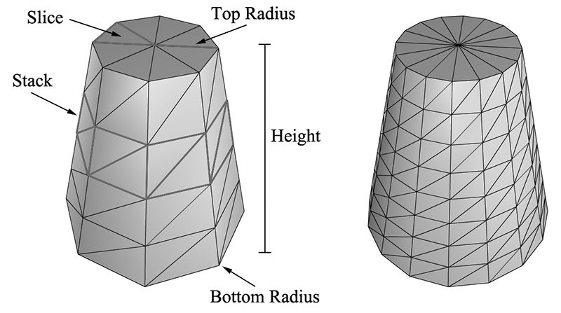
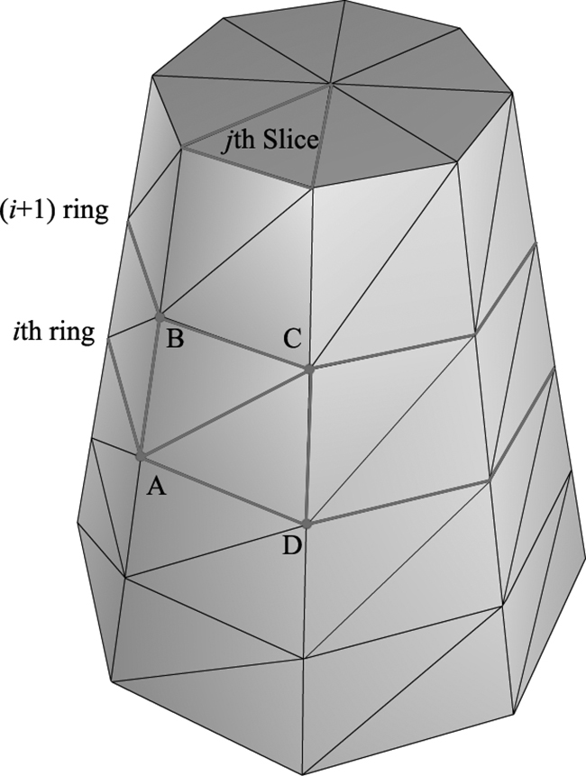
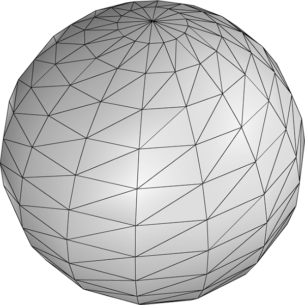
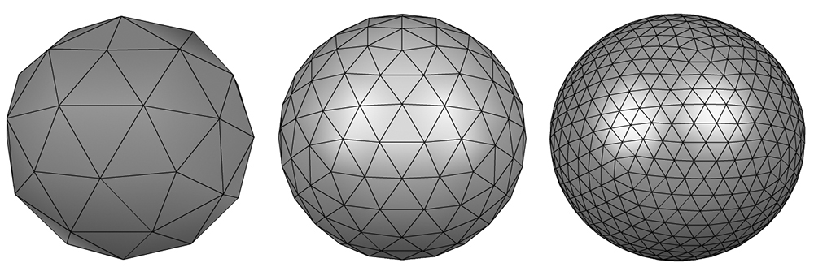
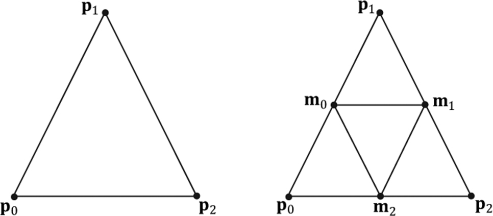
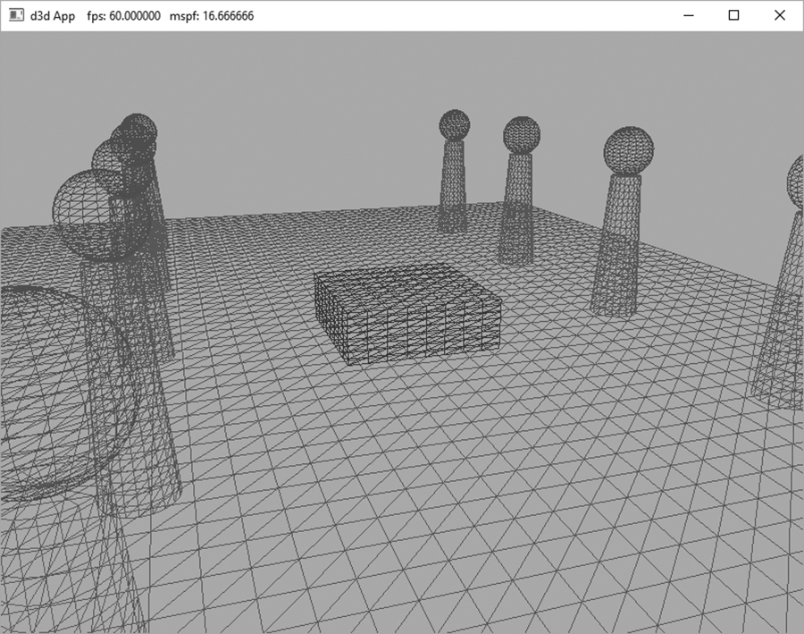
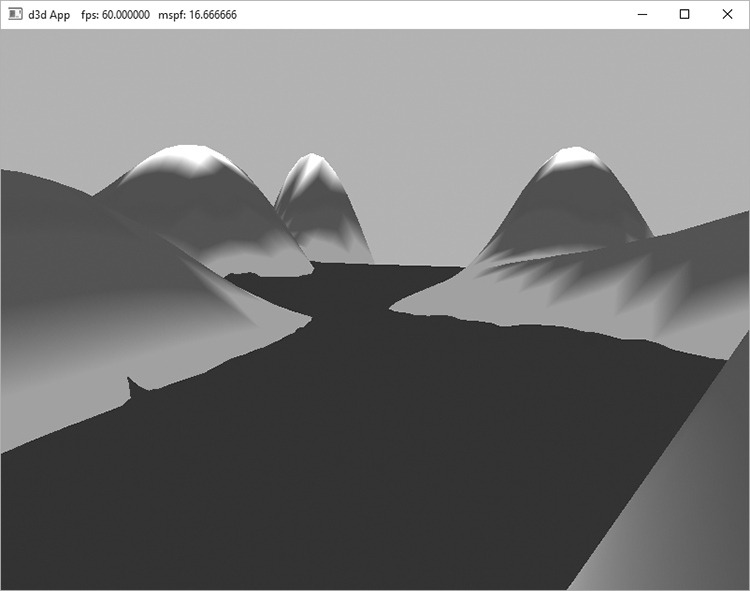
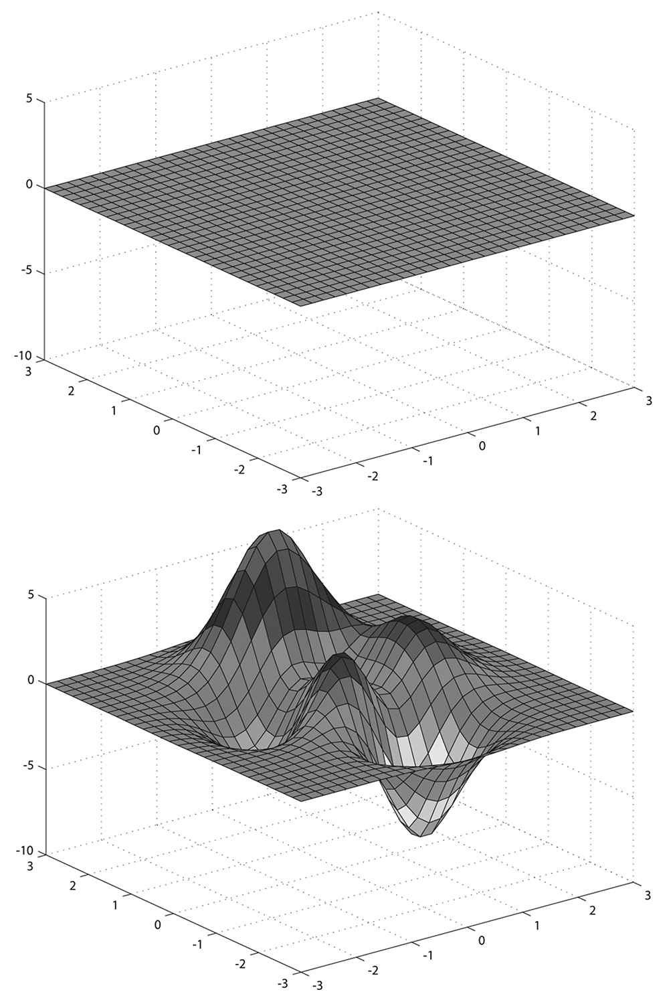
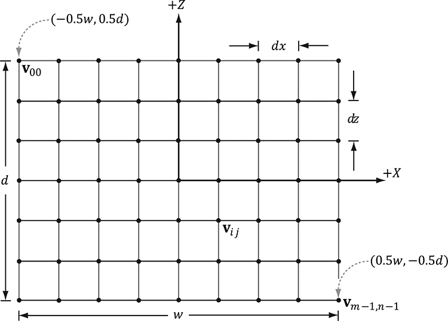
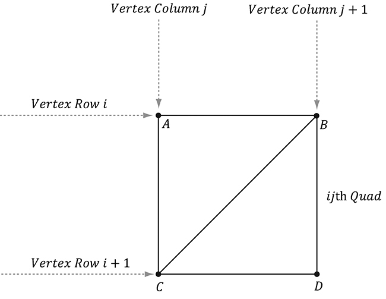
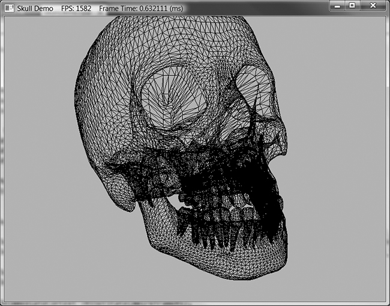